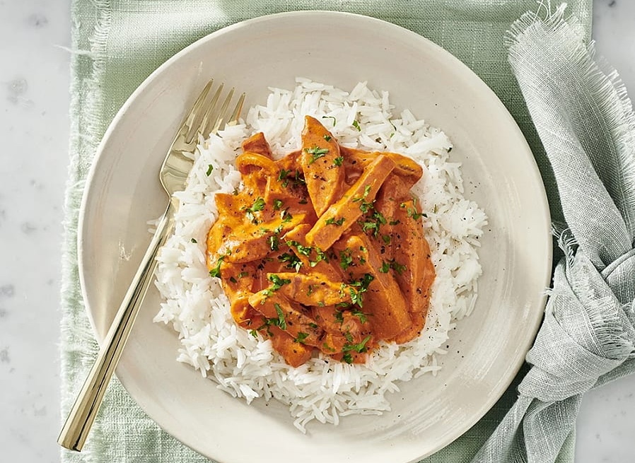
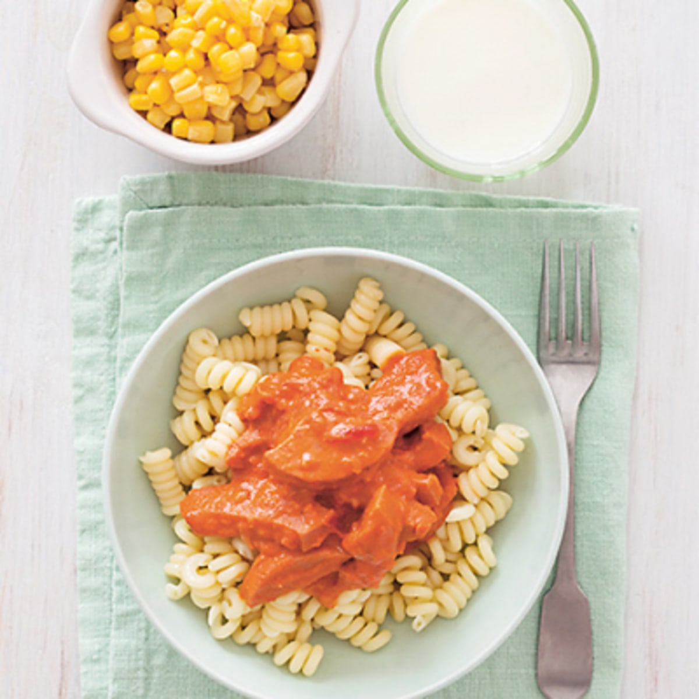

Ett enkelt recept på Korvstroganoff
Korvstroganoff är en lättlagad och välsmakande korvgryta med bland annat falukorv, lök, grädde och tomatpuré som passar bra som vardagsmiddag.
Ingredienser
- 4 port ris eller pasta
- 550 g falukorv eller kycklingstekkorv
- 1 gul lök
- 1 msk olivolja
- 3 msk tomatpuré
- 2 1/2 matlagningsgrädde
- 1 dl mjölk
- 1tsk dijonsenap
Gör så här:
- Koka riset eller pasta enligt anvisningen på förpackningen.
- Skär korven i stavar. Skala och hacka löken.
- Stek korv och lök i oljan i en stekpanna ca 5 minuter. Tillsätt tomatpuré och fräs någon minut.
- Rör ner grädde, mjölk, soja och dijonsenap. Låt sjuda ca 5 minuter.
- Smaka av med peppar och ev salt.
Serveringsförslag
Servera korvstroganoffen med ris eller pasta.

